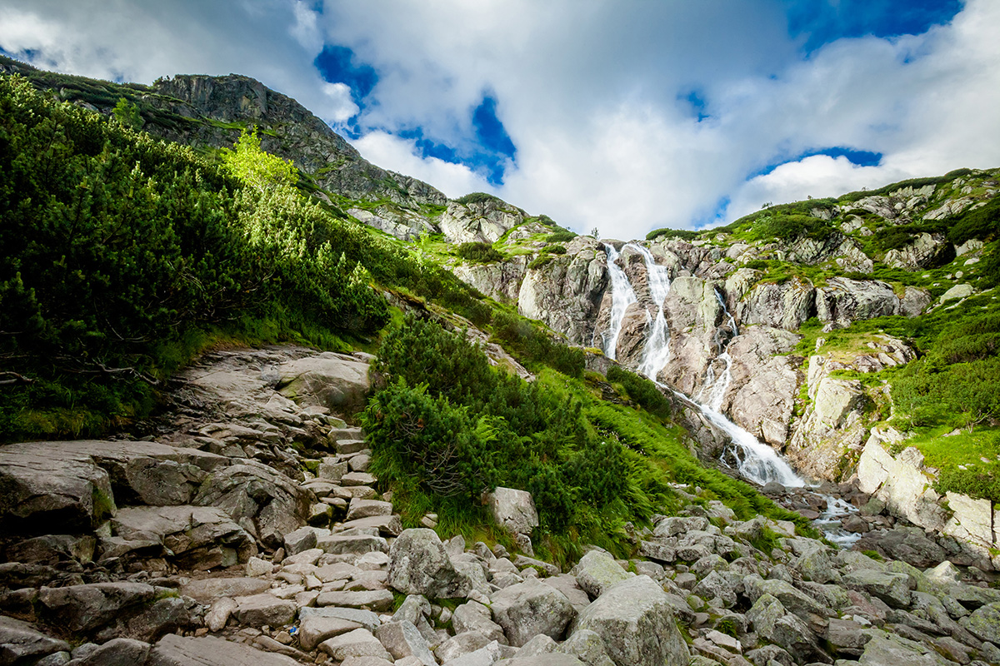

Wodospad Siklawa to najwyższy wodospad w Tatrach i jednocześnie jeden z najwyższych w Polsce. Znajduje się w Dolinie Kościeliskiej i ma wysokość około 70 metrów.
Morskie Oko to największe i najgłębsze jezioro w Tatrach. Znajduje się na wysokości około 1395 metrów nad poziomem morza i jest jednym z najczęściej odwiedzanych miejsc W polskich Tatrach.
Schronisko PTTK na Hali Ornak to jedno z najpiękniejszych schronisk w polskich Tatrach. Znajduje się na wysokości około 1100 metrów nad poziomem morza i oferuje piękne widoki na Tatry.
Sanktuarium na górze Świętej Anny to jedno z najważniejszych miejsc pielgrzymkowych w Polsce. Znajduje się na Górnym Śląsku i oferuje piękne widoki na okoliczne góry.
Zamek w Mosznej to jedna z najpiękniejszych rezydencji na Śląsku. Znajduje się w pobliżu Opola i oferuje piękne widoki na okolicę.
Skałki Piekarskie to jedno z najpiękniejszych miejsc w Sudetach. Znajdują się w pobliżu miasta Piekary Śląskie i oferują piękne widoki na okolicę .
Kopalnia soli w Wieliczce to jedno z najważniejszych miejsc turystycznych w Polsce. Znajduje się w pobliżu Krakowa i oferuje niezapomniane wrażenia związane z historią i kulturą regionu.
Łukasz Ludynia 2ta